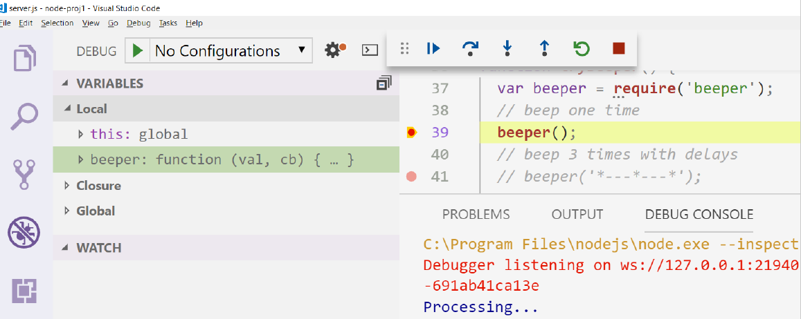
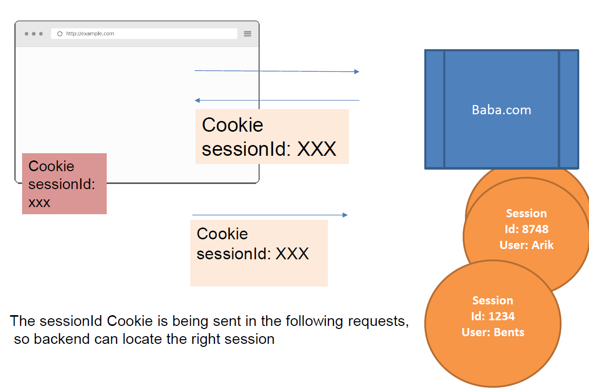

Node.js
- Node.js (Born 2009) is an open source platform built on Chrome's JavaScript runtime (V8) for easily building fast, scalable network applications.
- Node.js uses an event-driven, non-blocking I/O model that makes it lightweight and efficient
- Suitable for data-intensive real-time applications that run across distributed devices
– Which is what's everyone is building these days (-:
- The Core is small and all the rest is Community and Natural Selection
- Small modules, helps taking the DRY principle to a new level
– Another characteristic of many Node.js modules is the fact that they are created to be used rather than extended
– Uncomplicated, practical approach is preferred here upon a pure, flawless design.
Node Packaged Modules

Starting an NPM project
-
npm init
– npm init –yes
ask me no question I tell you no lies mode.
-
npm install
– Shortcut: npm i
– Example: npm i lodash
-
npm ls
– Lists the dependencies
– To show only top level:
npm ls --depth=0
Note: npm installs from local cache (instead of network) if exists
Lodash is a popular utility library, it has some useful functions, lest see few of them.
e.g. here is the times() function:
function getRandomScore() {
return Math.round(Math.random() * 100);
}
var result = _.times(5, getRandomScore);
// result => [64, 70, 29, 10, 23]
Using Lodash - keyBy
Making a map from an array of objects:
var posts = [
{ id: '1abc', title: 'First blog post', content: '...' },
{ id: '2abc', title: 'Second blog post', content: '...' },
];
var postsMap = _.keyBy(posts, 'id');
var post = postsMap['2abc']
// post -> { id: '2abc', title: 'Second blog post', content: '...' }
Using Lodash - debounce
Debouncing events:
var elEmail = document.getElementById('email-input');
elEmail.addEventListener('keyup', _.debounce(validateEmail, 500));
To include a module, use the require() function:
var colors = require('colors');
console.log('Hello'.green);
console.log('I like it when in rains'.underline.red)
console.log('inverse the color'.inverse);
console.log('OMG Rainbows!'.rainbow);
Lets try some more:
- geocoder
- beeper
Creating your own module:
function sayHello() {
console.log('Hello')
}
function getAns() {
return axios.get('https://yesno.wtf/api')
.then(res => res.data)
}
module.exports = {
sayHello,
getAns
}
- The module system exposes a special variable called global, which can be used for this purpose.
- Everything that is assigned to this variable will be available in the global scope.
Remember that:
global state should be avoided whenever possible
// Node.js global vars are put on the 'global' object
global.userName = 'Puki';
__dirname – global that contains the curr folder path, full path
Used in development to re-run the app on every file change. (Its like live-server for your node.js)
Install using:
npm install –g nodemon

nodemon --ignore "./data" server.js
There are different ways to do I/O in Node.js, asynchronous IO is very common in node:
fs.stat(fileName, cb)
fs.readFile(fileName,[options], cb)
fs.watch(filename[, options][, cb])
// reading a big file with stream
stream = fs.createReadStream('bigfile.txt');
stream.on('data', function(data){});
-
File modules
– moduleName starts with "/" - an absolute path to the module. NOT USED.
– moduleName starts with "./" - a relative path, starting from the requiring module.
-
Core modules
– ModuleName is Not prefixed with "/" or "./“ looks within the core Node.js modules.
-
Package modules
– If no core module is found, the search continues by looking into the first node_modules directory that is found navigating up in the directory structure starting from the requiring module.
– Continue to search up in the directory tree, until it reaches the root of the file-system.
-
NODE_PATH env variable
– node will search those paths for modules if they are not found elsewhere
Easy, with VSCode!
continuation-passing style (CPS)
- CPS is a general technique In functional programming.
- It means that a result is propagated by passing it to another function (the callback), instead of directly returning it to the caller
function sum(a, b) {
return a + b;
}
function sum(a, b, cb) {
cb(a + b);
}
Conventions - Callbacks come last
For the sake of readability, a callback param to a function will always come last, example:
fs.readFile(filename, [options], callback)
Conventions - Errors
Error comes first:
– The error produced by a CPS function is passed as the first argument of the callback (null or undefined when no errors)
– Any actual result is passed starting from the second argument.
– Example:
fs.readFile('puki.txt', function(err, data) {
if ( err ) handleError(err);
else processData(data);
});
Propagating Errors
- Propagating errors in synchronous, direct style functions is done as usual with the throw command. This causes the error to go up in the call stack until it's caught by a try-catch clause
- BUT, In asynchronous CPS, error propagation is done by passing the error to the next callback in the CPS chain:
function getJSONFromFile(filename, cb) {
fs.readFile(filename, function(err, data) {
if ( err ) return cb(err);
var json;
try {
json = JSON.parse(data);
} catch (e) {
return cb(e);
}
cb(null, json); // everything went fine
});
};
Require a JSON file
Actually, reading a JSON file is easy with:
var todos = require('../data/todo.json')
A Simple Node Server
- In this basic web server example, many client connections can be handled concurrently.
- When someone connects, then it executes the callback - Each connection is only a small heap allocation.
var http = require('http');
http.createServer(function (req, res) {
res.writeHead(200, {'Content-Type': 'text/plain'});
res.end('Hello misterBIT\n');
}).listen(1337, "127.0.0.1");
console.log('Server running at http://127.0.0.1:1337/');
Express is a fast, unopinionated, minimalist web framework for Node.js
const express = require('express')
const app = express()
app.get('/', (req, res) => res.send('Hello!))
app.listen(3000, () => console.log('Server listening on port 3000!'))
In Node, server side rendering can be done with the module ejs
app.get('/admin', (req, res) => {
res.render(VIEW_DIR +'admin.ejs',
{ greet: 'Yes Master', users : theUsers });
})
<%= greet %>
<ul>
<% users.forEach(function(user){ %>
<li>
<%=user.fullName %>
</li>
<% }); %>
</ul>
Using HTML Forms:
<form action="/todo/save" method="post">
<input name="id" type="hidden" value="<%=todo.id %>" />
<input name="txt" type="text" value="<%=todo.txt %>" />
<label>
<input name="completed" value="true" type="checkbox"
<%= (todo.completed)? 'checked' : '' %> />
Done
&</label>
&<button type="submit">Save
</form>
Express bodyParser is the module responsible for handling requests body:
// Support forms submit
app.use(bodyParser.urlencoded({ extended: true }));
// Than in an app.post():
const formData = req.body
- Cookie is an ancient mechanism, that is still used today
- It allows the server to save information about the current user, in the user’s browser
- This information will be automatically sent by the browser, in the following requests
- Cookies are per domain
Cookies Usages
Cookies are mainly used for three purposes:
- Personalization
- Tracking
- Session management
– User preferences, themes, and other settings
– Recording and analyzing user behavior
– Logins, shopping carts, game scores, or anything else the server should remember
Using Cookies
- Lets use cookies:
- Add the express cookieParser:
- Then we can read the cookie from the request:
res.cookie('lastVisitedTodoId', todo.id)
var cookieParser = require('cookie-parser');
app.use(cookieParser());
req.cookies.lastVisitedTodoId
Memory / Permanent Cookies
res.cookie(lastVisitedTodoId, todo.id, {maxAge: 60*60*1000});
- The server side may choose to hold some state per connected browser (e.g – loggedinUser, shoppingCart)
- This is how:
app.use(cookieParser());
var session = require('express-session')
app.use(session({
secret: 'puki muki',
resave: false,
saveUninitialized: true,
cookie: { secure: false }
}))
app.post('/setUser', (req, res) => {
req.session.nickname = req.body.nickname
res.redirect('/todo');
})
The Cookie and the Session
JSON – JS Object Notation:
- JSON is a self-describing, human readable data format.
- Originally designed for lightweight exchanges between browser and server, it has become widely accepted for many types of applications.
REST APIs:
- Mapping of HTTP Methods to CRUD
(Create, Read, Update, Delete, List)
– GET /monster/123
– DELETE /monster/123
– PUT /monster/123 (with an updated object)
– POST /monster (with a new object)
– GET /monster – (returns a list of monsters)
- JSON is usually the 1st class citizen